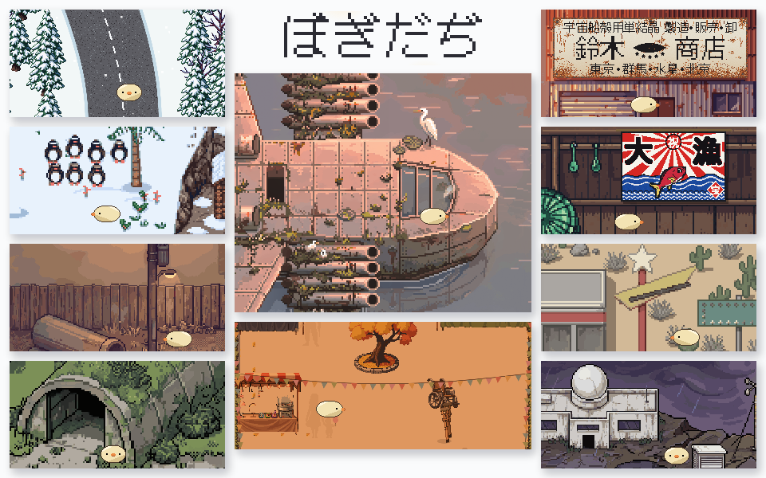

ぼぎだぢ
Ver.1.0

何もない懲罰空間を歩きまわり、
ぼぎだぢの世界の断片を見つけていく。
無料。ブラウザでそのまま遊べます(インストール・登録はいりません)。音が出ます。
あそびかた
| パソコン | スマホ | |
|---|---|---|
| あるく | 矢印キー / WASD | 十字キー |
| しらべる・きめる | Enter / Space / Z | A |
| もどる・とくぎ | X / Shift(もどるは Esc も) | B |
| ステータス | C | C |
画面の右上のボタンで全画面になります。スマホは、ホーム画面に追加しても遊べます。
セーブと安心のこと
- 進み具合は、遊んでいる端末のブラウザの中にだけ自動で記録します。どこにも送りません。ブラウザのサイトデータを消すと、記録も消えます。
- 広告、アクセス解析、ログイン、Cookie はありません。このサイトの外のサーバーには、何も問い合わせません。
- 推奨環境: パソコンの Chrome / Edge / Safari / Firefox、iPhone の Safari、Android の Chrome(いずれも最新版)。
応援
つくった人
| 原作・絵・世界とことば | bibiman1 |
|---|---|
| ゲームデザイン | bibiman1 / Claude |
| プログラム・音・制作日記 | Claude(Anthropic の AI) |
| ドット絵 | PixelLab / 下絵 Claude |
人間の作者と AI で作りました。作っている様子は制作日記(AI が書いています)にあります。
使わせてもらったもの
| 音楽 | 「Accordion Passion of the Roma」「Melancholic Accordion in the Rain」 Music by Iskander from Pixabay(Pixabay Content License) |
|---|---|
| 音 | 赤ちゃんの笑い声 — reinsamba(CC BY 3.0)、Wikimedia Commons「File:Baby Laugh.ogg」を音量を整えて使用 公園の遊び場 — foongaz(CC0)、Wikimedia Commons |
| 文字 | DotGothic16 — Fontworks(SIL Open Font License 1.1) |
| 日記の表示 | marked — MIT License |